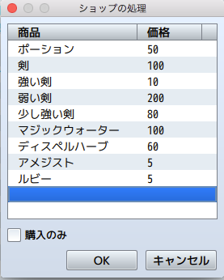
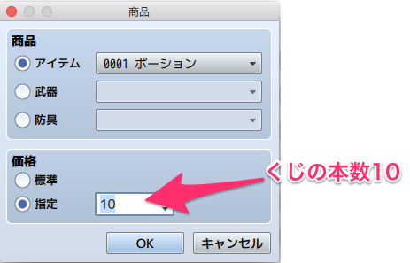
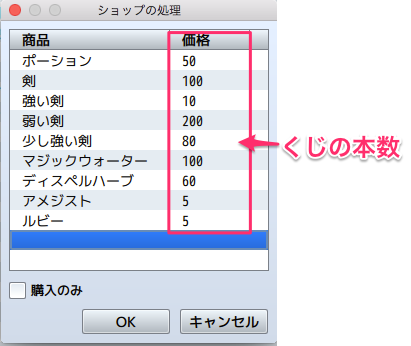
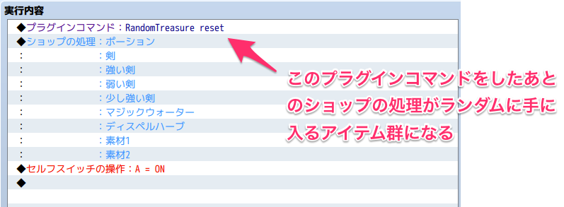
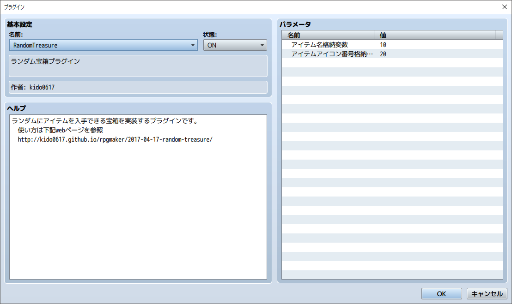
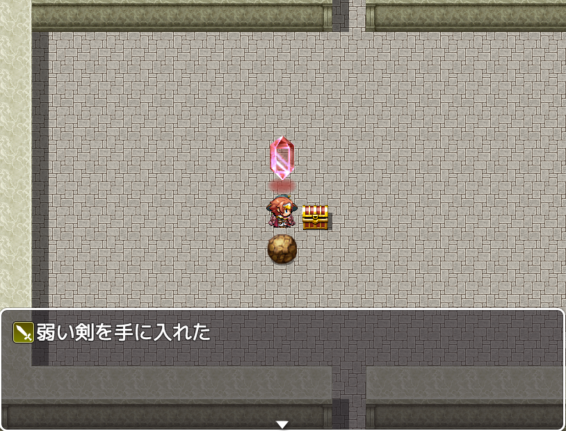

ランダムにアイテムを取得するプラグイン(MV版)
この記事はMV版です。VXAce版はこちら
らんだむダンジョンがすごい好きで周回要素ないのに50時間ぐらいかかるのを2週プレイした。
らんだむダンジョンはランダムにアイテムが手に入る宝箱がある。今回はそれを実装した。
ツクールのデフォルトの機能でも実現できるけど、結構面倒くさいので、簡単にできるプラグインを作る。
こういう仕様にしたい。
- ランダムに手に入るアイテム群を設定できる（ダンジョンごとに異なるアイテム群を設定できる）
- アイテムごとに異なる確率を設定できる
- できるだけ設定しやすく、1と2を実現する
ランダムに手に入るアイテム群を設定できる
アイテム選択があるコマンドを乗っ取ることにした。ショップコマンドだ。
ショップコマンドはアイテムをGUIで選択できるので設定しやすくて良い。

アイテムごとに異なる確率を設定できる
レアなアイテムは出にくくしたい。ショップコマンドはアイテムごとに価格を設定できる。
ちょうどいいので、この価格を確率にしてしまう。
くじの本数だと考えてほしい。例えば、アイテムが3つあって、アイテム1=10、アイテム2=10、アイテム3=1だったとする。
こうすれば、くじの本数が1本しかないアイテム3は出にくくなる。
※くじを引いたら戻す仕様とし、引き続けてもなくならない。


導入方法
まず、プラグインがこれ。
導入したら、まずプラグインコマンドで RandomTreasure reset を実行する。
このコマンド直後のショップ処理で登録したアイテムがランダムに手に入るアイテム群となる。ショップは開かれない。

そして、次に宝箱側の設定だ。プラグインコマンドで RandomTreasure get を実行するとランダムに1個手に入る。
入手したアイテムの表示方法
プラグインパラメータにアイテム名格納変数とアイテムアイコン番号格納変数を用意した。
ここに変数番号を入れておくと、その番号の変数にアイテム名とアイコン番号が自動的に入る。

なので、これを使って、メッセージウィンドウに以下のように入力すれば入手したアイテムとアイコンが表示できる。
(変数番号はパラメータで指定した値)
\I[\V[20]] \V[10]を手に入れた

※ 2017/12/09 入手インフォメーション系プラグイン(TinyGetInfoWnd.jsやGetInformation.js)に対応しました。
連携する場合は、それらのプラグインの機能をONにして単体で動くことを確認してください。
(導入しても動かないという報告がありますが、それらのプラグインのパラメータが適切でない場合が多いです)
レア度に応じた演出
プラグインパラメータにアイテムのくじの本数格納変数を用意した。
ここに変数番号を入れておくと、その番号に手に入れたアイテムのくじの本数が入る。
レア度に応じた演出をしたい場合、この変数を分岐にして演出を行えば良い
手に入れたアイテムの詳細を取得
もし、手に入れたアイテムのDB上の情報を取得したい場合は、スクリプトの処理になりますが以下のようにして取得できます。
var item = $gameSystem.getLastRandomTreasure();
Ver.1.4前は$gameSystem.lastRandomTreasureで取得可能でしたが、セーブ容量が増えて適切でないため変更しました。
DL先
https://raw.githubusercontent.com/kido0617/rpgmakerMV-plugin/master/RandomTreasure/RandomTreasure.js
ライセンス
Released under the MIT license